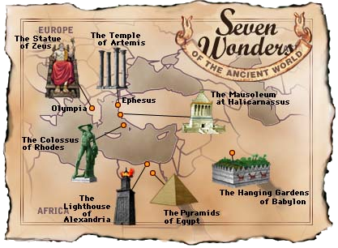

Walk Through History...
The listing of the seven wonders of the ancient world is generally attributed to Herodotus. The listing is at least as old as 500 B.C. and possibly older. Herodotus' list may have served different purposes, but the commonly-believed usage was as a listing of places where the truly cultured male of that era should go and see in much the same fashion that a British gentleman of the late 1800s might tour the continent during their last year of college as a rite of passage into gentlemanship.
The final listing as we know it today was not officially finalized until the middle ages. Today, the only wonder that stands is the Great Pyramid of Giza.
The listing shown to the left is shown in chronological order based upon when the wonder was built. There are many other orderings suggested. Also, additional wonders have been suggested, such as the Hagia Sophia in Istanbul, or the Taj Mahal at Agra, India. These buildings were not built in the ancient world. There are also listings of the seven natural wonders, seven engineering wonders, etc.